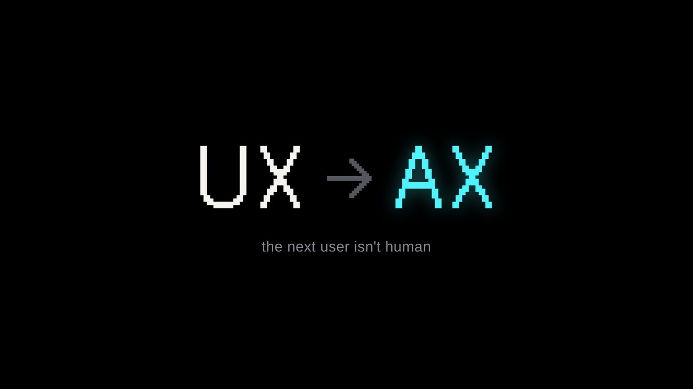

The next users aren't human.
We Might Be Moving from UX to AX
A designer on Agent Experience — and why formatting your work so machines can read it is already a design job.
Old news in tech. Somehow still heresy in design.
The Hard Part of Building with AI Isn’t the Code
I'm not an engineer, but I was able to turn that understanding into something tangible. A designer's case for why domain knowledge — not code — is what makes building worth it.

Everyone said AI would end illustration. I think it did the opposite.
AI Can Draw Anything. So I Started Drawing by Hand.
A talk I gave my team, turned into a post — on why a hand-drawing hobby matters more in the age of AI images, and the simple tool I love.